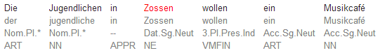
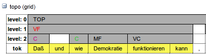
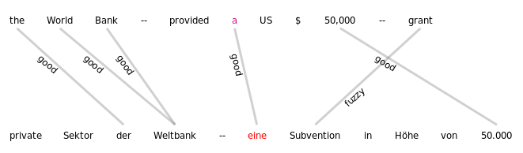
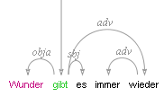
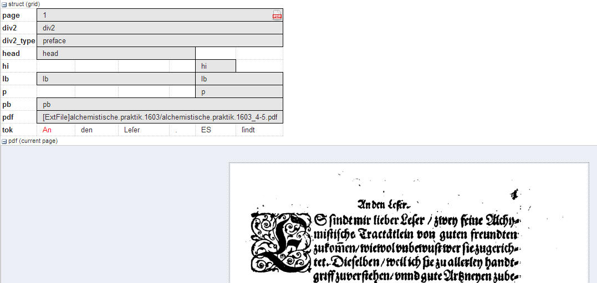
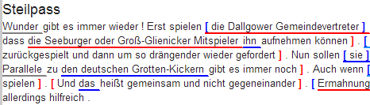

List of Visualizations
kwic
Default key-word in context view.

tree
Constituent syntax tree.

Mappings
The annotation names to be displayed in non terminal nodes can
be set e.g. using node_key = "cat" for an annotation called cat (the default),
and similarly the edge labels using edge_key = "func" for an edge label
called func (the default).
It is also possible to use a different annotation
layer for the leaves of the tree instead of the default tokens by
specifying terminal_name for the annotation name and terminal_ns for
the namespace. Multiple instructions are separated using semicolons.
grid
Annotation grid, with annotations spanning multiple tokens.

Mappings
It is possible to specify the order of annotation layers in each grid.
Use annos = "anno_name1, anno_name2, anno_name3" to specify the
order or annotation layers. If annos is used, additional annotation layers
not present in the list will not be visualized. If mappings is left empty,
layers will be ordered alphabetically. It is also possible to add
annotations applying to the tokens to the visualization, rather than only
span element annotations, by using tok_anno = "true". Finally, you may
hide the tokens that normally appear at the bottom of the grid using
hide_tok = "true".
grid_tree
A grid visualizing hierarchical tree annotations as ordered grid layers.

Note: all layers represent the same annotation name at different hierarchical depths, marked level: 0,1,2,... etc. on the left
Mappings
Specify the name of the annotation to be visualized in the
grid with node_key = "name". Note that all grid levels visualize the same
annotation name at different hierarchical depths.
sentstructurejs
Visualization for token-token alignments between parallel texts using SentStructure.js

Mappings
Use alignment_label to specify the edge annotation name that should be displayed.
discourse
A view of the entire text of a document, possibly with interactive coreference links.

It is possible to use this visualization to view entire texts even if you do not have coreference annotations)
arch_dependency
Dependency tree with labeled arches between tokens; requires SVG enabled browser.

Mappings
To use a different annotation layer (e.g. my_annotation) for the leaves of the tree instead of the default tokens,
enter node_key = "my_annotation".
audio
A linked audio file.

video
A linked video file.

pdf or pdfdoc
A linked pdf file, showing either a specific page aligned with an annotation or an entire pdf document respectively.

Mappings
It is possible to configure the height of the pdf window
using the height instruction (in pixels), as well as the name (node_key)
of the node annotation to be used to give individual page numbers
aligned with a span of tokens (relevant for pdf only, pdfdoc always
shows all pages). The instructions can be combined as follows:
[visualizers.mappings]
node_key = "pp"
height = "400"
rst or rstdoc
A visualization for rhetorical structure theory annotations, of either just the search result with context or the entire document respectively.

Mappings
The names of rst edges can be configured with the setting
edge. Additionally, some graphical parameters can be modified:
siblingOffet defines the distance between sibling nodes; subTreeOffset
defines the distance between node and parent node; nodeWidth defines
the width of a node; labelSize defines the font size of a node label;
edgeLabelColor specifies an HTML Color for the font color of an edge
label; nodeLabelColor specifies an HTML Color for the font color of a
node label.
html or htmldoc
A versatile annotation-triggered css-based visualization of either the immediate search result context or the entire document respectively; see the ANNIS HTML Visualization Guide for more details and some example stylesheets.

Mappings
You must specify the name of the css stylesheet (.css)
and configuration file (.config) for the visualization, which are place in
the ExtData folder of the relANNIS corpus (see HTML Visualization
Guide for details). To configure the stylesheet name, use the value
config = "filename", where filename is the common name of both
the .config and the .css files, without the extension.